Naslovnica / Usluge
16 terapija.Jedan plan za vas.
Pregled svih usluga privatne prakse Vratarić. Otvorite stavku za opis, indikacije i fotografiju iz ordinacije. Cijene su u cjeniku.
01Dijagnostički ultrazvuk
Pregled mišićno-koštanog sustava

U praksi uz fizikalnu terapiju možete obaviti i dijagnostički ultrazvuk mišićno-koštanog sustava.
Nakon pregleda možete odmah započeti s fizikalnom terapijom, a za određene programe (rame, koljeno, kuk, lakat, skočni zglob) nudimo pogodnosti.
- Kalcifikati u ramenu
- Rupture mišića, tetiva i ligamenata
- Stanje nakon uganuća skočnog zgloba
- Teniski lakat
02Elektroterapija
Primjena različitih struja u terapijske svrhe

TENS, dijadinamske, galvanske i interferentne struje, mikrostruje te elektrostimulacija mišića i živca. Vrstu struje i trajanje biramo prema dijagnozi.
Terapiju ne bi trebali primati pacijenti s pacemakerom i dekompenziranom srčanom funkcijom; kod dijadinamskih struja kontraindikacija je i metal u tkivu (npr. endoproteza).
- TENS – akutna i kronična bol
- Dijadinamske struje – analgetski učinak, edemi i hematomi
- Galvanske struje – cirkulacija i bol
- Interferentne struje – najdublje djelovanje
- Mikrostruje (MENS) – djeluju na razini stanice
03Emmett tehnika
Lagani pritisak na Emmett točke
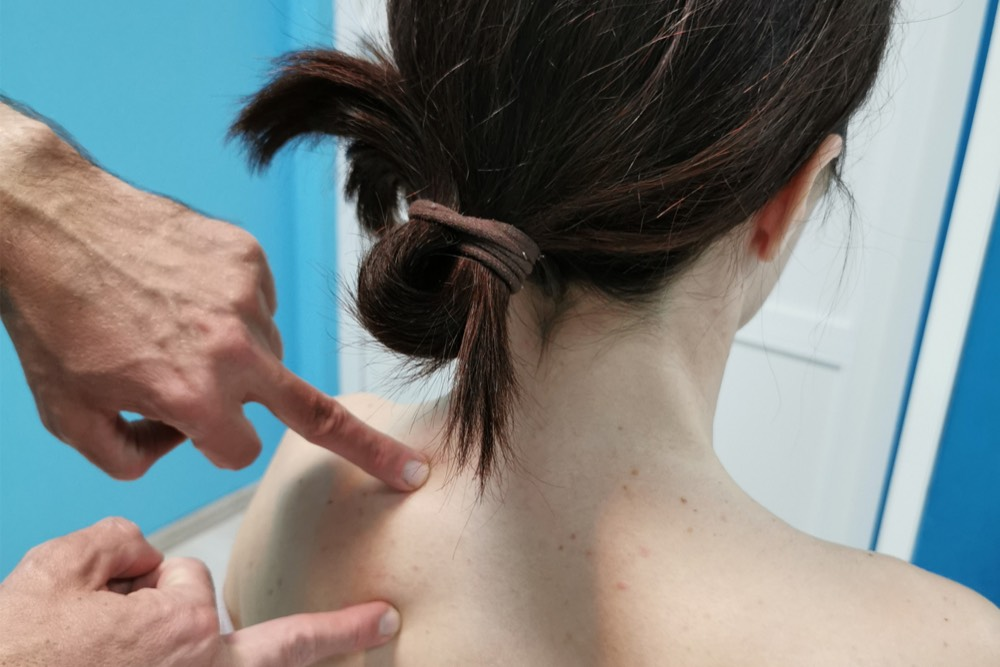
Oblik tjelesne terapije koji je razvio Ross Emmett (Australija): lagani pritisak prstima na određene točke, tzv. Emmett točke.
Učinak se može odmah provjeriti mjerenjem snage, gibljivosti ili ravnoteže. Oba fizioterapeuta u praksi licencirani su Emmett terapeuti.
04Funkcionalni grupni treninzi
Pokretljivost, snaga, fleksibilnost, izdržljivost
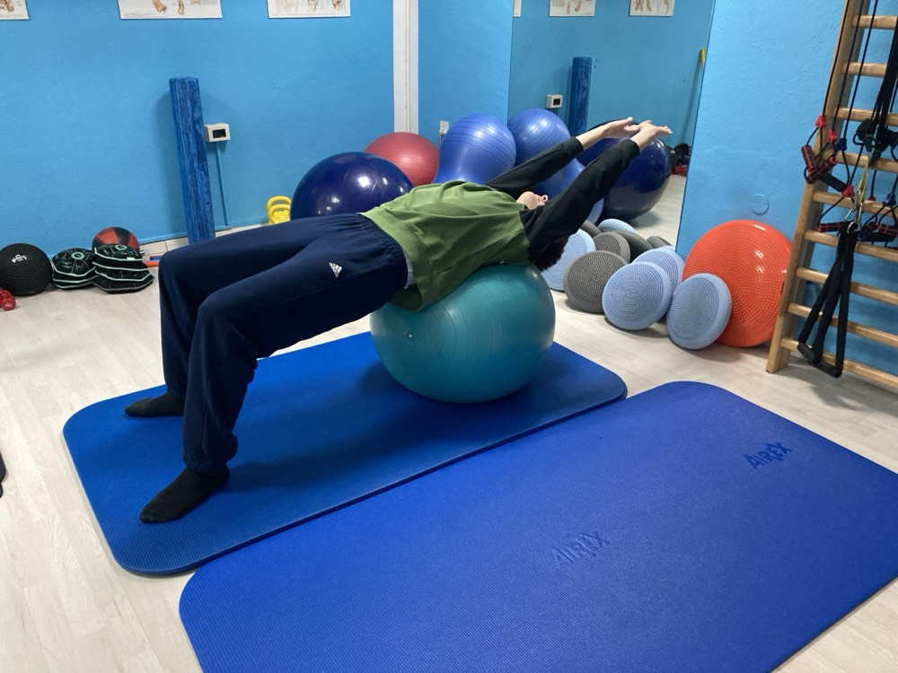
Ciljani treninzi s nizom vježbi za pokretljivost, snagu, fleksibilnost i izdržljivost. Vježbe se prilagođavaju zdravstvenom stanju svakog polaznika.
- U grupi najviše 5 osoba
05Terapijski ultrazvuk
Primjena ultrazvučne energije u svrhu liječenja
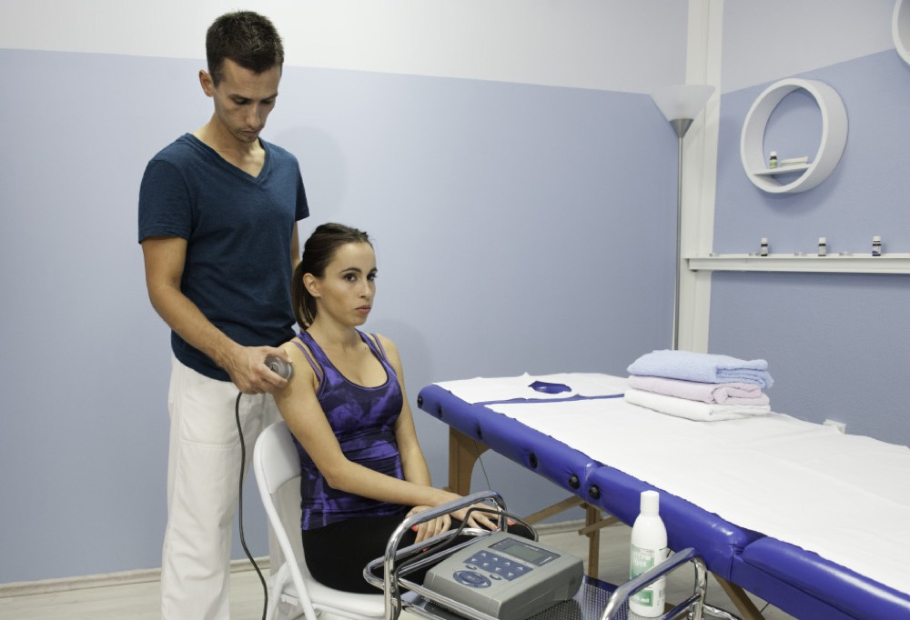
Djelovanje je mehaničko (mikromasaža), toplinsko, fizikalno-kemijsko i biološko – povećava prokrvljenost tkiva i pomaže bržem cijeljenju.
- Kronične degenerativne bolesti
- Burzitisi, tendovaginitisi, kapsulitisi
- Istegnuća i ozljede ligamenata
- Bolno i zakočeno rame
- Lateralni i medijalni epikondilitis
06McKenzie koncept
Manualni tretman i aktivno sudjelovanje pacijenta

Sustav procjene i liječenja problema kralježnice i ekstremiteta. Tijekom pregleda koriste se položaji i pokreti kojima pacijent sam utječe na svoje simptome.
Redovitim samotretmanom kod kuće pacijent stječe kontrolu nad tegobama i djelomičnu neovisnost od terapeuta.
07Kinesio taping
Ozljede mišića i zglobova, hematomi, bolna stanja
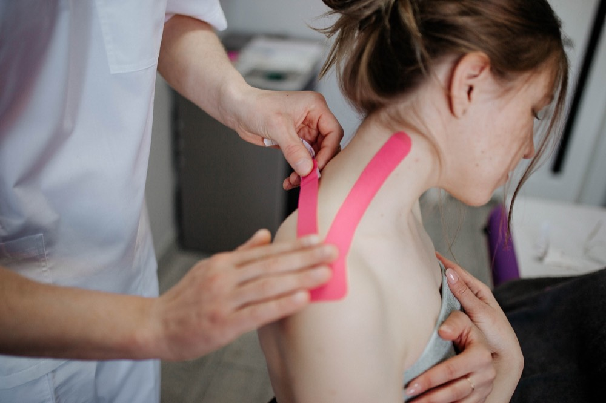
Metodu je razvio dr. Kenzo Kase. Traka daje potporu i stabilnost mišićima i zglobovima bez ograničavanja raspona pokreta, a koristi se kod akutnih i kroničnih stanja.
- Na mišić – normalizira tonus, smanjuje bol
- Na ligamente – kod ozljeda i preopterećenja
- Korektivno postavljanje trake
- Na protok limfe – brže smanjenje edema
08Individualni funkcionalni trening
Program prilagođen vašem zdravstvenom stanju
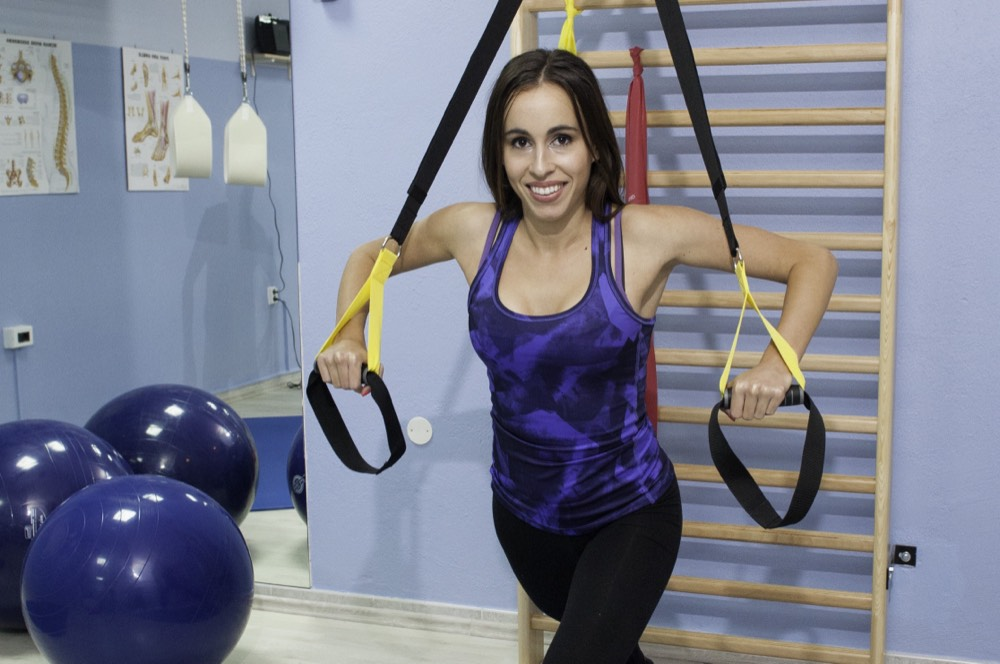
Za one koji imaju problema s vratnom ili lumbalnom kralježnicom i nisu sigurni koju vrstu vježbanja odabrati. Program razvija funkcionalnu snagu, mobilnost i stabilnost, a svaka je etapa prilagođena vašem stanju i ciljevima.
- 8 treninga mjesečno – 150 € (posebna ponuda)
09Korektivne vježbe za kralježnicu
Lordoza, skolioza, kifoza i loše držanje
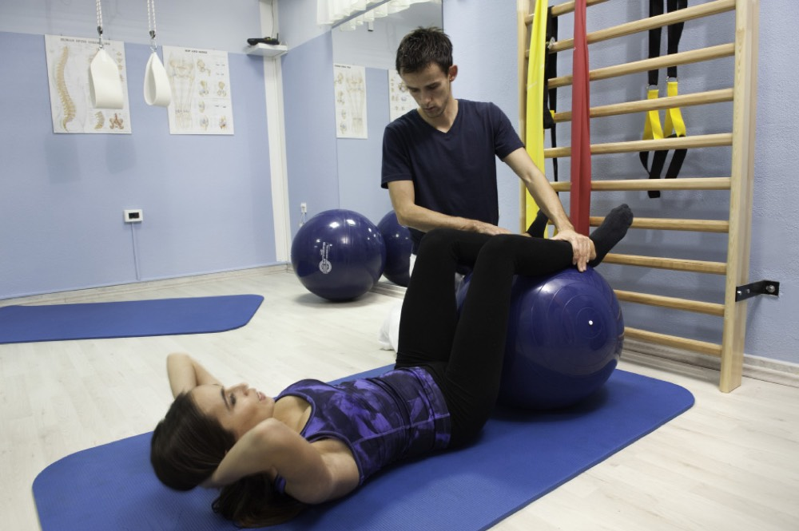
Veliku pažnju posvećujemo vježbama za lordozu, skoliozu, kifozu i loše držanje.
Rani početak sportske aktivnosti, naročito u fazi naglog rasta, izlaže kralježnicu brojnim mehaničkim stresovima koji mogu uzrokovati strukturalne promjene.
10Vježbe u suspenziji
Rasterećenje težine ekstremiteta
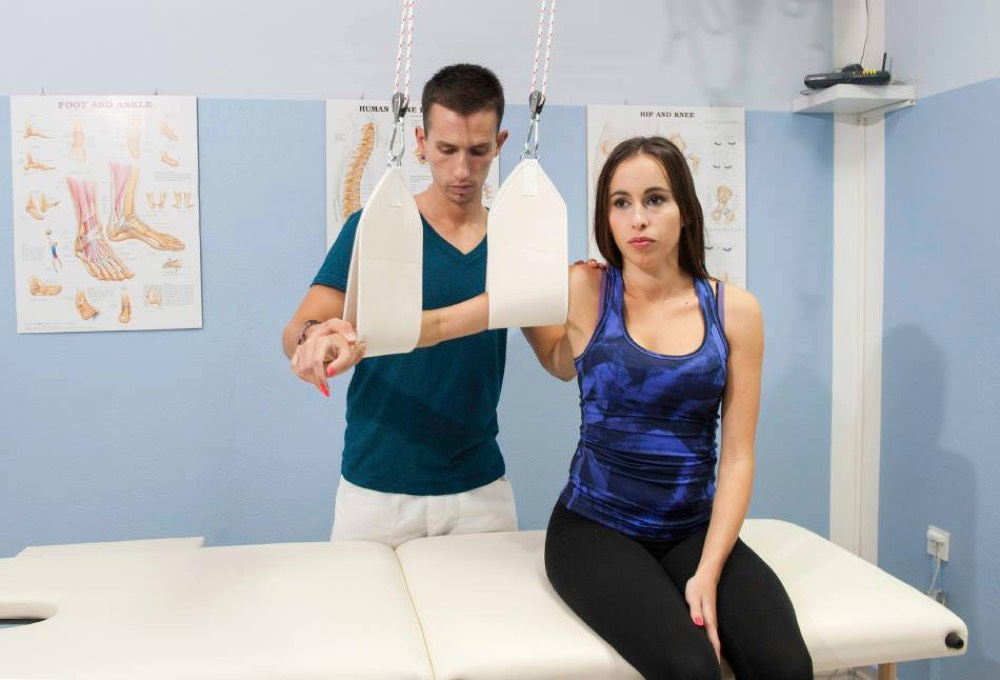
Vježbe se provode u posebno konstruiranom pomagalu koje rasterećuje težinu ekstremiteta. Tako se povećava opseg pokreta kod zglobova zahvaćenih artrozom i upalama te kod starijih osoba.
11Kinetek
Pasivno razgibavanje koljena nakon operacija
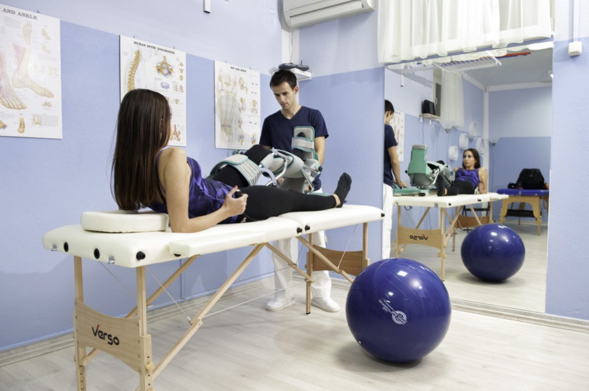
Uređaj za pasivno razgibavanje zglobova kojim se doziraju stupnjevi pokreta i prati napredak rehabilitacije – najčešće nakon operacije koljena.
- Prednji i stražnji križni ligament
- Kolateralni ligamenti i patela
- Menisk
- Ugradnja totalne proteze koljena
12Masaža
Parcijalna masaža leđa ili nogu
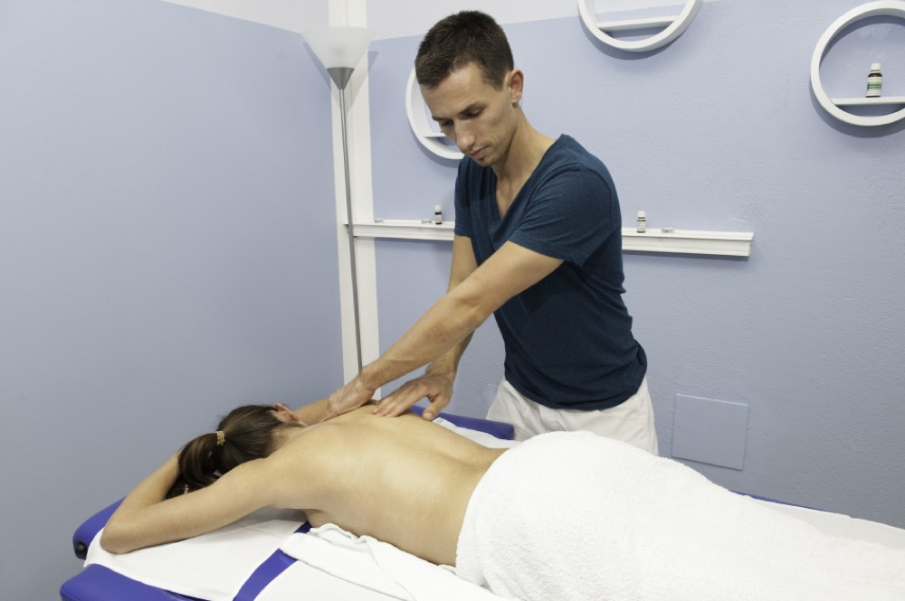
Ručna masaža uz terapijsku ima i dijagnostičku komponentu. Prilagođena je svakom klijentu – medicinska ili sportska.
U praksi masažu radimo isključivo parcijalno – masaža leđa ili masaža nogu. Trajanje i cijene navedeni su u cjeniku.
13Magnetoterapija
Frakture, upalne i kronične degenerativne bolesti
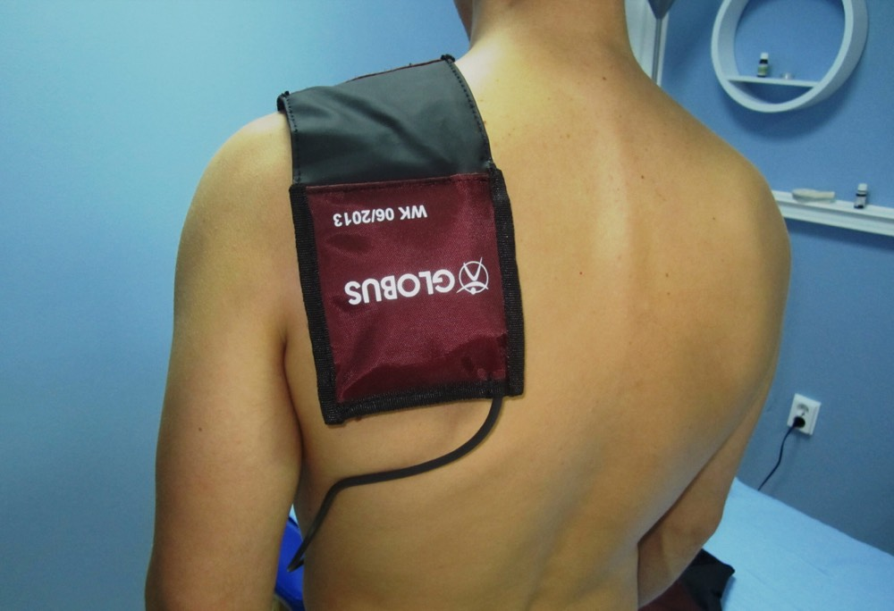
Elektromagnetno polje djeluje na razini stanice. Posebno je indicirana kod sporog zarastanja fraktura te upalnih i kroničnih degenerativnih bolesti.
- Traumatologija
- Reumatologija
- Neurologija – npr. tenzijska glavobolja
- Dermatologija
14Fizikalna terapija u kući
Za nepokretne i ograničeno pokretne osobe

Za osobe svih dobnih skupina, za nepokretne ili ograničeno pokretne osobe koje ne mogu na ambulantno liječenje te za one koji ne žele dugo čekati termin.
- McKenzie koncept
- Elektroterapija
- Kineziterapija (terapija pokretom)
- Terapijski ultrazvuk
- Magnetoterapija
- Kinesio taping
15Sportska rehabilitacija
Snaga, agilnost, propriocepcija i koordinacija

Rehabilitacija akutnih ozljeda lokomotornog sustava i bolnih stanja te preoperativna i postoperativna rehabilitacija sportaša.
- Sindromi prenaprezanja i uganuća
- Nakon artroskopije i odstranjivanja meniskusa
- Nakon rekonstrukcije ligamenata
16Terapija laserom
Biostimulacija i ublažavanje boli
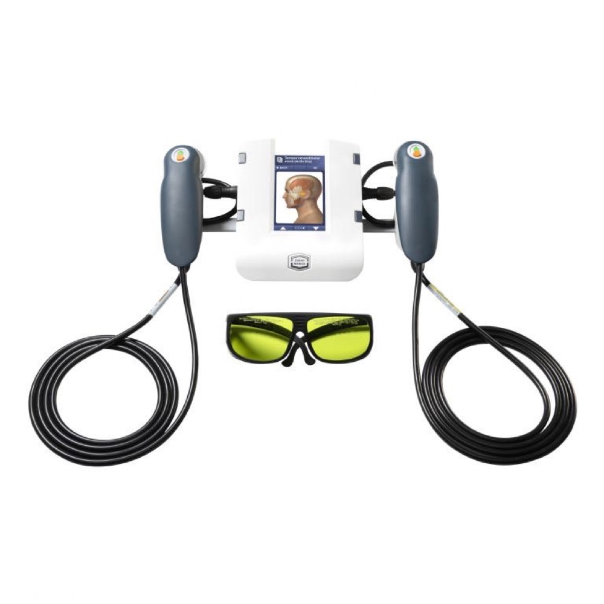
Koncentrirani snop svjetlosti prodire u tkivo i potiče prirodne procese regeneracije. U praksi koristimo uređaj Laser Mphi, valnih duljina od 808 do 905 nm, uz obavezne zaštitne naočale.
Kontraindikacije su trudnoća, tumorska oboljenja, akutni tromboflebitis i bol nepoznatog uzroka.
- Bolovi u lumbalnoj i vratnoj kralježnici
- Ozljede mišića, tetiva i ligamenata
- Tendinitisi i burzitisi
- Sportske ozljede
- Karpalni tunel, neuralgije
Prije prvog dolaska.
Kako mogu zakazati termin?
Pozivom ili porukom na broj 098 997 6098, e-poštom na fizioterapija.vrataric@gmail.com ili putem obrasca na ovoj stranici.
Koje je vaše radno vrijeme?
Od ponedjeljka do petka od 8:00 do 21:00 sati i subotom od 9:00 do 12:00 sati, po dogovoru.
Radite li dijagnostički ultrazvuk?
Da, radimo dijagnostički ultrazvuk mišićno-koštanog sustava. Nakon pregleda možete odmah zakazati i termin za fizikalnu terapiju.
Nudite li fizikalnu terapiju kod kuće?
Da, za osobe svih dobnih skupina kojima je potrebna, posebno za nepokretne ili ograničeno pokretne osobe koje ne mogu koristiti ambulantno liječenje.
Koliko traje terapija?
Trajanje ovisi o vašim potrebama i vrsti terapije, obično između 30 i 60 minuta. Fizioterapijski programi traju 60 minuta.
Kako se pripremiti za prvu terapiju?
Ponesite medicinsku dokumentaciju ako je imate i odjenite udobnu odjeću.
Nudite li terapije za djecu?
Da, nudimo terapije prilagođene djeci s različitim potrebama rehabilitacije.
Nudite li grupne treninge?
Da, funkcionalne grupne treninge prilagođene različitim razinama kondicije. U grupi je najviše 5 osoba.
Nudite li poklon bonove?
Da. Odaberite program iz naše ponude ili nas kontaktirajte za savjet. Plaćanje je putem internet bankarstva ili prilikom preuzimanja, a bon šaljemo e-poštom ili ga možete preuzeti osobno.
Je li prostor pristupačan osobama s invaliditetom?
Da. Osobe s invaliditetom mogu pristupiti prostorima prakse, a kretanje unutar ordinacije prilagođeno je njihovim potrebama.